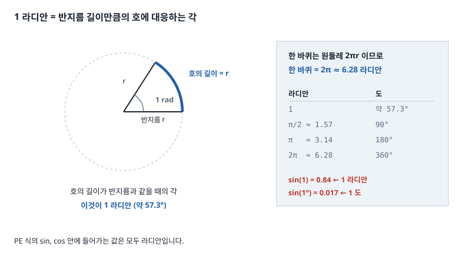
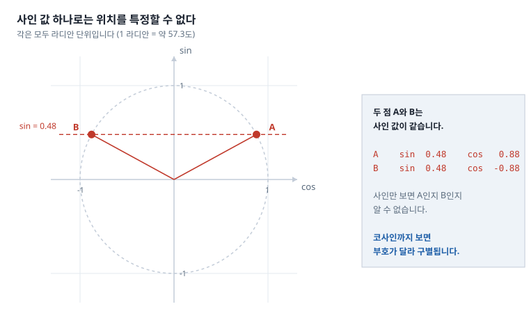
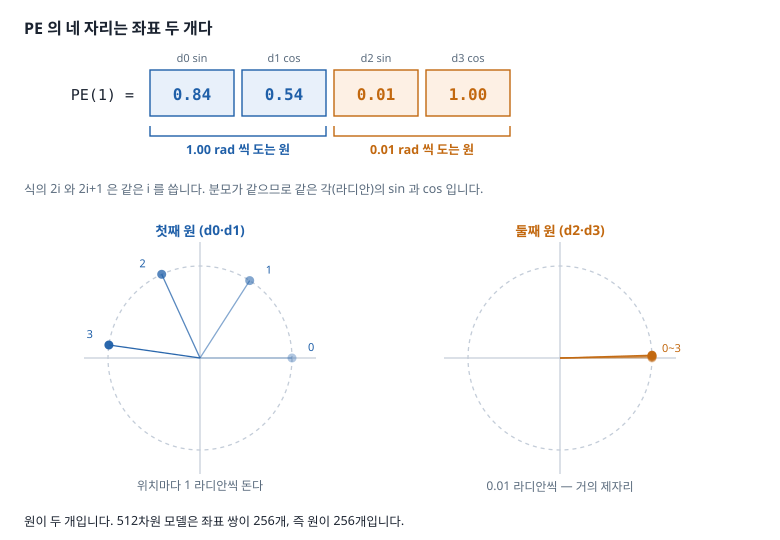
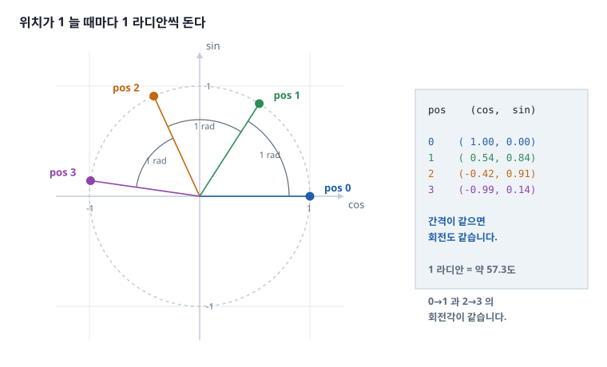

한 위치의 PE를 구하고, 한 자리 이동 전후의 두 성분을 회전으로 검산합니다.
2교시에서 사용한 PE 표의 출처를 설명합니다. 기준 X는 2교시에서 완성했습니다.
위치 인코딩(Positional Encoding, PE)은 자리 번호를 숫자 벡터로 표현합니다. 사인과 코사인을 한 쌍으로 쓰면 위치에 따른 변화를 회전으로 읽을 수 있습니다.
토큰의 순서를 모델에 알려 주고, 일정한 자리 이동이 성분 쌍에서 어떤 변화로 나타나는지 읽기 위해서입니다.
위치와 성분 쌍의 번호로 각을 구합니다. 같은 각의 사인과 코사인을 차례로 적고, 회전식으로 다음 위치의 두 값을 확인합니다.
사인(sin)과 코사인(cos)은 각을 넣으면 각각 숫자 하나를 주는 함수입니다. 그래프의 가로축은 각, 세로축은 함숫값입니다. π rad는 180°, 2π rad는 한 바퀴입니다. 그래프에서 각 0을 보면 sin은 0, cos는 1에서 시작합니다.
두 값은 −1과 1 사이를 오가고, 한 바퀴(2π rad)마다 같은 값으로 돌아옵니다. 각 π/3(60°)에 그은 점선을 따라가면 sin은 약 0.87, cos는 0.50입니다.
원점을 중심으로 거리가 1인 점들을 모으면 단위원이 됩니다. 원점 O에서 오른쪽을 향할 때를 각 0으로 두고, 반시계 방향으로 각을 잽니다. 선분 OP의 길이를 1로 고정해 돌리면 끝점 P는 원 위를 움직입니다. 그림에서 P에서 가로축으로 점선을 내리면 빗변이 1인 직각삼각형이 생깁니다. 이 각에서 코사인은 가로 길이 ÷ 빗변, 사인은 세로 길이 ÷ 빗변입니다. 1로 나누면 길이가 그대로이므로 같은 각의 가로 좌표가 cos, 세로 좌표가 sin입니다.
그래프의 가로축에서 π/3은 두 값을 읽을 각입니다. 원 위에 점을 찍을 때는 π/3을 좌표에 적는 대신, 그래프에서 읽은 두 값을 옮깁니다. 가로에는 cos의 0.50, 세로에는 sin의 약 0.87을 놓으므로 P ≈ (0.50, 0.87)입니다. 단위원은 그 두 값을 한 점에 모아, 각이 늘어날 때 두 값이 함께 어떻게 바뀌는지 보여 줍니다.

계산기에서 RAD를 선택하면 sin(1)≈0.84입니다. DEG에서는 약 0.017입니다. 단위원의 왼쪽에 있는 점은 가로 좌표인 cos가 음수입니다.

예시의 A·B는 사인값이 같고 코사인 부호가 다릅니다. 한 바퀴 안에서 두 성분을 함께 보면 각을 구별할 수 있습니다.
앞에서 같은 각으로 사인과 코사인을 하나씩 읽었습니다. 이제 그 두 값을 위치 인코딩(PE)의 한 쌍에 넣어 봅시다. 첫째 쌍은 d0·d1, 둘째 쌍은 d2·d3입니다.

두 원을 보세요. 왼쪽 원은 d0·d1의 한 쌍을, 오른쪽 원은 d2·d3의 한 쌍을 보여 줍니다. 한 원 안에서는 같은 각으로 사인과 코사인을 읽습니다. 왼쪽 원과 오른쪽 원에서 한 자리마다 도는 각은 다릅니다. 그 차이는 뒤의 PE 식에서 분모를 비교해 확인합니다.
단위원의 좌표는 (가로 x, 세로 y) 순서로 읽으므로 (cos, sin)입니다. PE는 위치를 나타내는 숫자를 성분 번호대로 저장합니다. 원논문은 0부터 세는 짝수 번호(2i)에 sin, 바로 다음 홀수 번호(2i+1)에 cos를 넣도록 정의했습니다. 그래서 첫 쌍은 d0에 sin, d1에 cos를 쓰고, 둘째 쌍은 d2에 sin, d3에 cos를 씁니다.
같은 각 π/3을 첫째 쌍에 넣는다고 생각해 보세요. 원 위에서는 (가로, 세로) ≈ (0.50, 0.87)이고, PE의 첫 두 칸은 [d0, d1] ≈ [0.87, 0.50]입니다. 두 값은 같고 적는 순서가 다릅니다. 다음 절의 회전 검산에서는 가로와 세로를 식에 넣을 때 d0·d1의 이름을 보고 구분합니다.
원논문 §3.5(PDF 6쪽)에서 pos는 자리 번호, i는 사인·코사인 쌍의 번호입니다. 같은 i에서 2i와 2i+1은 각각 사인과 코사인을 넣는 열입니다. 실습의 d0·d1은 i=0, d2·d3은 i=1에 해당합니다. dmodel은 토큰 벡터 전체의 성분 수입니다.
| pos | d0 | d1 | d2 | d3 |
|---|---|---|---|---|
| 0 | 0.00 | 1.00 | 0.00 | 1.00 |
| 1 | 0.84 | 0.54 | 0.01 | 1.00 |
| 2 | 0.91 | −0.42 | 0.02 | 1.00 |
| 3 | 0.14 | −0.99 | 0.03 | 1.00 |
| 4 | −0.76 | −0.65 | 0.04 | 1.00 |
| 5 | −0.96 | 0.28 | 0.05 | 1.00 |
a_i(pos) = pos / 10000^(2i/d_model) PE(pos, 2i) = sin(a_i(pos)) PE(pos, 2i+1) = cos(a_i(pos))
pos는 0부터 세는 토큰 위치입니다. i는 차원 쌍 번호입니다. d_model=4에서는 i=0이 d0·d1, i=1이 d2·d3입니다. sin·cos에 넣는 각은 라디안이며 결과는 단위 없는 성분입니다.
같은 i의 두 성분은 분모와 각을 공유합니다. 두 쌍의 분모는 각각 1과 100이므로, 위치가 1 늘 때 각각 1 rad와 0.01 rad 돕니다. 화면용 PE 표의 0~5번 행에서 d3가 1.00으로 보이는 것은 소수 둘째 자리로 반올림했기 때문입니다.
식에 숫자를 넣는 순서 ① 쌍 번호 i를 지수 2i/4에 넣습니다. ② 10000에 그 지수를 적용해 분모를 구합니다. ③ 위치 pos를 분모로 나눠 각을 구합니다. 예를 들어 위치 2의 둘째 쌍은 2×1÷4 = 0.5, 분모는 √10000 = 100, 각은 2÷100 = 0.02 rad입니다. d2와 d3은 이 각을 함께 쓰고 각각 sin, cos를 적용합니다.
위치 4도 같은 식으로 구해 봅시다. 첫째 쌍의 각은 4 ÷ 1 = 4 rad입니다. d0 = sin(4) ≈ −0.76, d1 = cos(4) ≈ −0.65입니다. 둘째 쌍의 각은 4 ÷ 100 = 0.04 rad입니다. d2 = sin(0.04) ≈ 0.04, d3 = cos(0.04) ≈ 1.00입니다. 소수 둘째 자리로 반올림한 네 값을 위 표의 4번 행과 대조해 보세요. 5번도 위치에 5를 넣어 같은 방법으로 구합니다.

이 그림의 좌표는 (x,y)=(d1,d0)입니다.
다음 위치의 d0 ≈ 0.54 × 현재 d0 + 0.84 × 현재 d1
그림의 번호를 식에서 찾아봅시다. 그림 ①은 원래 가로 d1을 돌렸을 때 생기는 세로 성분 0.84 × d1입니다. 그림 ②는 원래 세로 d0을 돌렸을 때 남는 세로 성분 0.54 × d0입니다. 위 식에는 ②, ① 순서로 적혀 있습니다. 두 항을 더하면 이동 후 d0입니다.
매번 출발 행을 PE 표에서 읽습니다. 곱과 합은 중간에 반올림하지 않고 최종값만 소수 둘째 자리로 반올림합니다.
계산 예시 · 0→1 위 PE 표의 0번 행에서 현재 d0 = 0.00, 현재 d1 = 1.00을 읽습니다. 0.54 × 0.00 + 0.84 × 1.00 = 0.84입니다. 도착 위치인 1번 행의 d0와 비교하면 같은 값입니다. 최종값 0.84를 위치 1의 d0와 비교했습니다. 출발값이 음수이면 괄호에 넣으세요.
앞에서는 회전 뒤의 높이 d0를 구했습니다. 이번에는 같은 출발점에서 오른쪽을 양수로 정한 가로 좌표 d1을 구합니다. 출발 가로 성분 d1을 1 rad 돌리면 가로에 d1 × cos(1)이 남습니다. 출발 세로 성분 d0를 1 rad 돌리면 왼쪽 방향의 가로 성분이 생겨 −d0 × sin(1)이 더해집니다.
다음 d1 ≈ 0.54 × 출발 d1 − 0.84 × 출발 d0입니다. 예를 들어 0→1에서 출발 d1은 1, d0은 0입니다. 0.54 × 1 − 0.84 × 0 = 0.54가 나오며, 1번 행 d1과 일치합니다. 2→3에서는 출발 d1이 음수이므로 괄호째 대입하세요.
위치 인코딩 부록 · 가로 방향의 두 성분과 뺄셈 그림
원논문은 사인·코사인으로 위치를 나타냅니다. 회전 검산은 그 값의 관계를 살펴보는 수업 활동입니다.
Transformer 원논문 3.5절 Positional Encoding (PDF 6쪽 [오프라인 6쪽]) · 짝수 성분에는 사인, 홀수 성분에는 코사인을 넣는 식을 찾아보세요.
이제 3교시 워크시트 인쇄물을 꺼내 실습해 봅시다.
워크시트 ①~④에서는 참조표 B의 0~3번 행을 사용합니다. 가이드북과 워크시트에 실린 4·5번 행은 뒤쪽 위치를 계산해 보는 참고값입니다.
워크시트 2→3으로 넘어가기 위의 성분 그림에서는 두 세로 값이 모두 양수입니다. 2→3에서는 각이 2 rad에서 3 rad로 커집니다. 이때 가이드북 그림의 2번 점은 원의 왼쪽에 있어 출발 d1이 음수입니다. 따라서 ①은 음수입니다. 이 항을 더하면 새 세로 좌표가 그만큼 작아집니다. 워크시트 1쪽 참조표 B의 2번 행에서 d0와 d1을 부호까지 읽어 0.54 × (출발 d0) + 0.84 × (출발 d1)에 넣으세요. 두 번째 곱이 음수이면 음수를 더하는 것이므로 첫 번째 곱에서 그 크기만큼 줄어듭니다. 같은 출발값을 가로 좌표 식에도 넣습니다. 각각 마지막에만 반올림해 3번 행의 같은 열과 비교하세요.
2교시 워크시트 1쪽 · 참조표 B 열기 위치 4·5번은 뒤쪽 위치에도 같은 식을 쓸 수 있음을 보여 주는 참고 행입니다.
3쪽의 1→2 검산에서는 d0만 계산합니다. 마무리 문제에서는 ① 계산표의 d2 또는 d3 행(i = 1), 분모 열을 보고 참조표 범위를 벗어난 위치 6의 각을 구합니다.
실습 뒤 강사의 화면 풀이를 보며 ①의 공통 각, ②의 반올림, ③의 대입식과 도착 행, ④의 설명을 차례로 확인합니다.
4교시에서는 2교시에서 완성한 X로 Q·K·V를 만듭니다. 오늘 계산한 PE는 그 X를 만들 때 더한 위치 정보입니다.
위치 정보와 순서 의존 마스크가 없는 Self-Attention은 입력 행을 재배열하면 점수표의 행·열과 출력 행도 대응해 재배열됩니다. 이 실습은 임베딩에 위치 벡터를 더해 자리 정보를 줍니다. 같은 간격에 같은 회전이 적용되는 성질이 상대 위치 학습에 도움이 될 수 있다는 것이 논문의 가설입니다.
밑 B와 짝수 폭 d에서 가장 긴 파장은 2πB^(1−2/d)입니다. 이 실습에서는 약 628입니다. 식은 학습 범위 밖의 위치에도 값을 계산할 수 있습니다. 장문 성능은 별도로 검증해야 합니다. RoPE에서는 Q·K의 내용과 함께 상대 간격에 대한 의존성이 내적에 나타납니다.